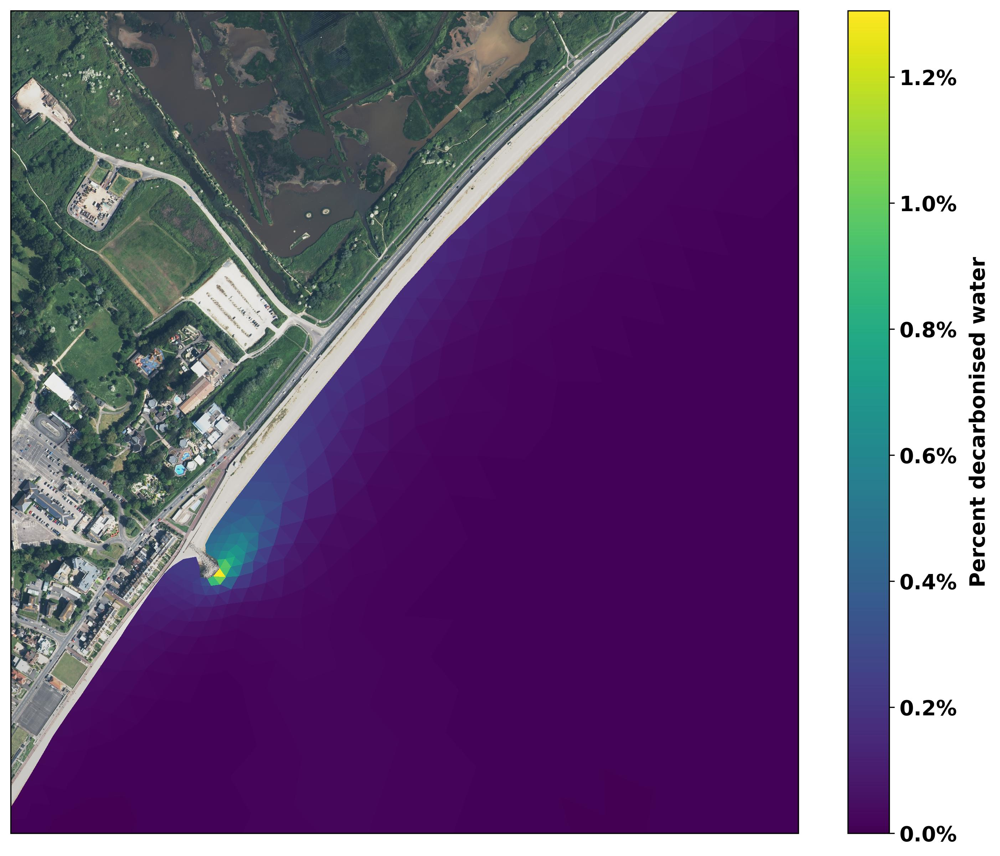

The diution of the released low carbon water was examined for our Environment Agency permit application. This was done using a state-of-the-art model of the seawater flows. It shows that within meters of the point where the water enters the sea it is diluted by more than 100 times, i.e. the seawater at that point is at least 99 parts normal seawater to 1 part water that we released. This is shown in the image below.

These model simulations assumed water was released at a rate over ten times higher than the plant can currently pump, so represents an extreme scenario.
The video below, taken from a BBC news report, shows the water being discharged from the pilot plant.